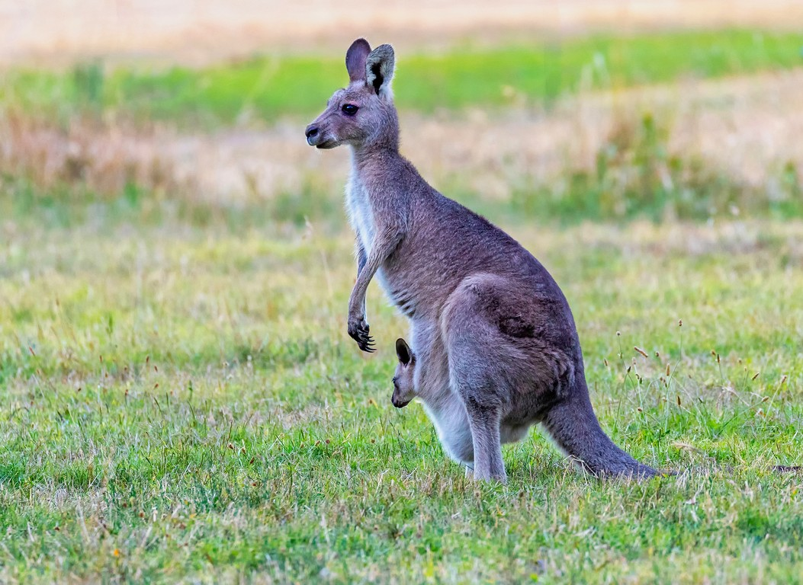
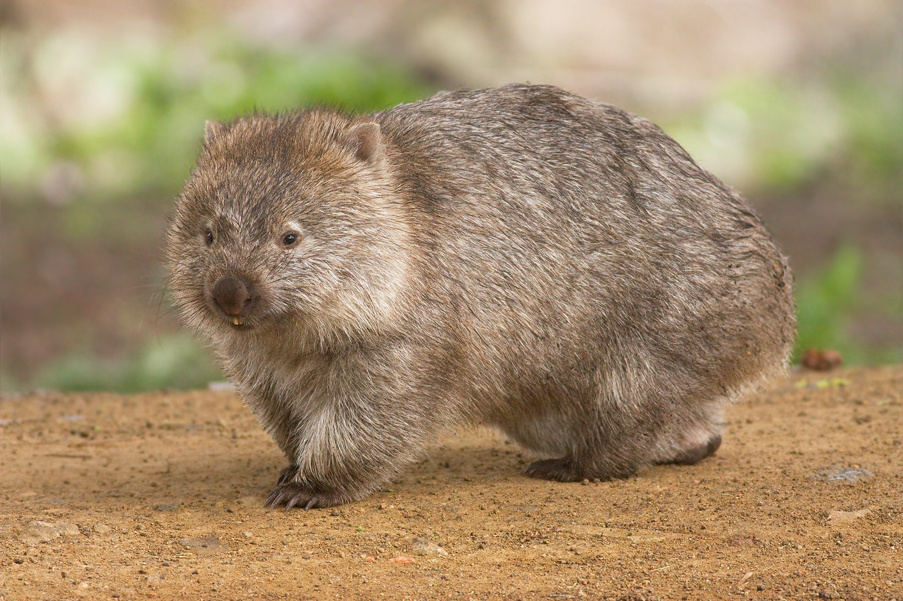

Wallaby
Macropus rufogriseus
| Reino: | Animalia |
| Classe: | Mammalia |
Wallaby ou wallabee (cuja tradução á letra para o português é "Canguru Pequeno") é a designação comum das várias espécies de marsupiais da família Macropodidae da Oceania. Caracteristicamente são menores que os seus congêneres cangurus ou wallarus. Eles têm as patas traseiras menores que as patas traseiras do canguru.
Wombat
Vombatidae
| Reino: | Animalia |
| Classe: | Mammalia |
O wombat (chamado de vombate no Brasil; e
conhecido por fascólomo em Portugal) é um animal marsupial originário da Austrália. Os
fascólomos pertencem à família vombatidae. São quadrúpedes atarracados, com
aproximadamente um metro de comprimento, com uma cauda curta e grossa. São adaptados em sua tolerância de
habitat, são encontrados em áreas florestais, montanhosas e em charnecas do Sul da Austrália, incluindo a
Tasmânia, bem como uma faixa isolada de cerca de 300 hectares no Parque Nacional Epping Forest localizado no
centro do estado de Queensland.
Os vombates são conhecidos por serem os únicos animais no mundo que produzem fezes
em forma de cubo.